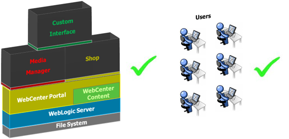
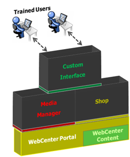

OUM |
WebCenter Supplemental Guide |
||
Method Navigation |
Current Page Navigation |
||
|
|
||||||||
This document contains OUM supplemental task guidance for WebCenter projects.
The task guidelines in this document should be used to supplement the guidelines that appear in the OUM Task Overview.
| WebCenter - OUM Supplemental Task Guidelines (this document) collapse table | expand table |
OUM Task Overview |
|---|---|
D.ACT.FD Finalize Documentation |
|
| DO.110 Finalize Documentation | |
D.ACT.PPE Prepare Production Environment |
|
| TS.050 Prepare Production Environment | |
D.ACT.GP Go Production |
|
| TS.052 Implement Production Support Infrastructure | TS.052 Implement Production Support Infrastructure |
| TS.058 Verify Production Readiness | TS.058 Verify Production Readiness |
| TS.060 Go Production | TS.060 Go Production |
During the Transition phase, minor revisions or changes to the software system may cause updates to any or all of the documentation work products. This task covers the incorporation of any of those changes into the Documentation work products.
This task addresses the installation and configuration of the database, WebCenter, and any custom extensions intended for Production use.
Activate the support personnel and procedures for the new business system and review requirements for support-related services from software suppliers, contractors, help desks, and other support services.
The Production Support Infrastructure involves implementing the operational infrastructure documented in the Production Support Infrastructure Design (TS.040). It should address the following:

Formally verify that the organization’s systems, host facilities, local area networks (LANs), wide area networks (WANS), and people are prepared for Production. This is the final approval step before the cutover to the new Production system.

Take the new WebCenter system and put it into Production use. The new system is now part of the business and is being used to satisfy business needs.

Copyright © 2006, 2016, Oracle and/or its affiliates. All rights reserved.